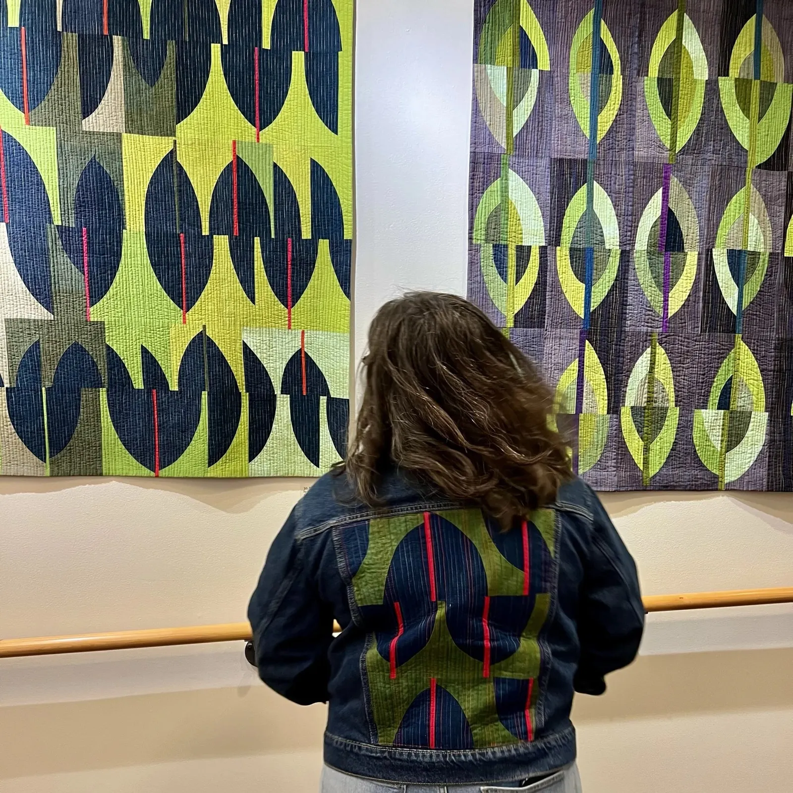
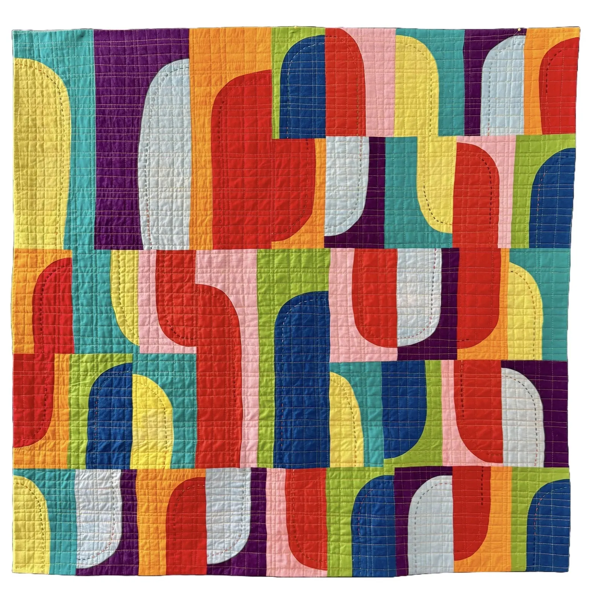
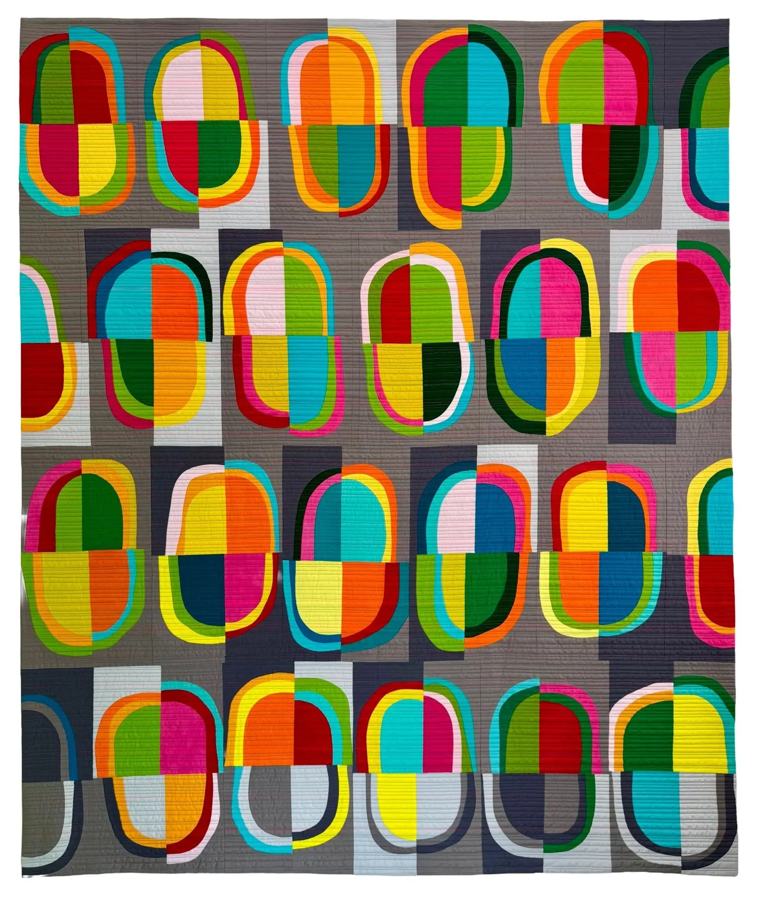
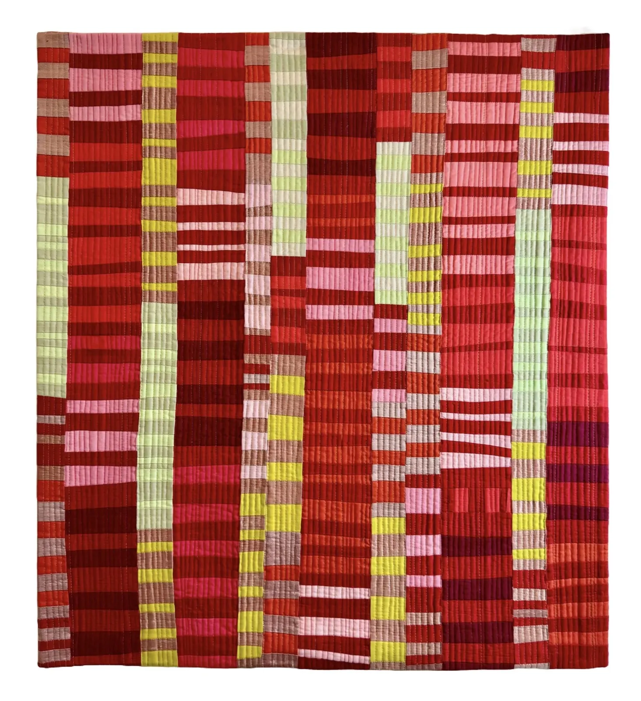
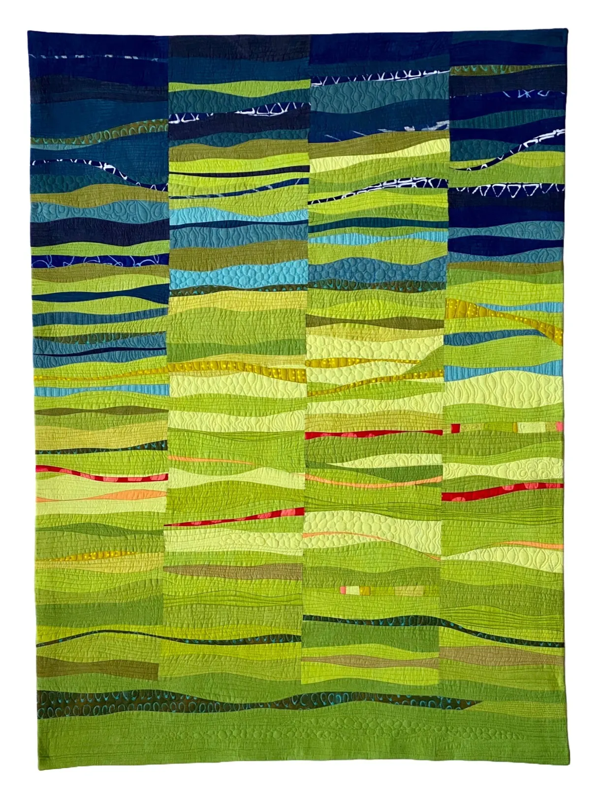
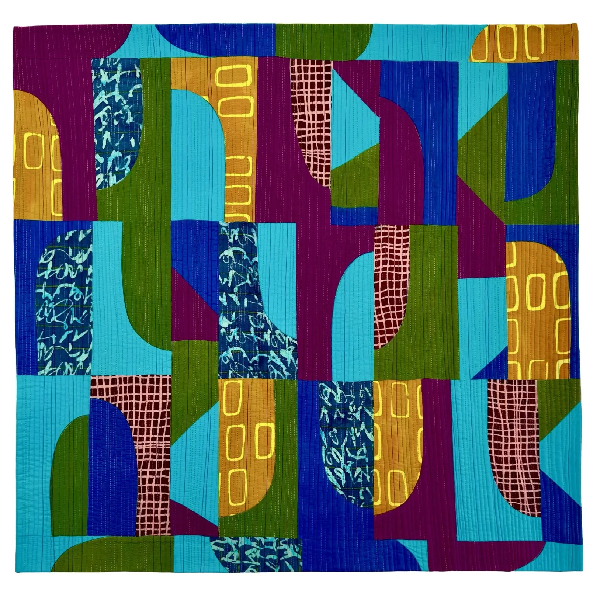
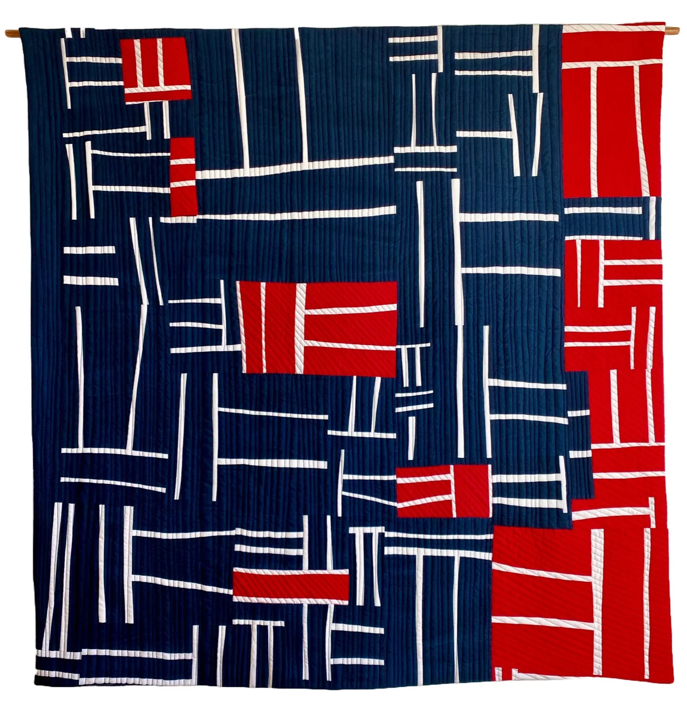
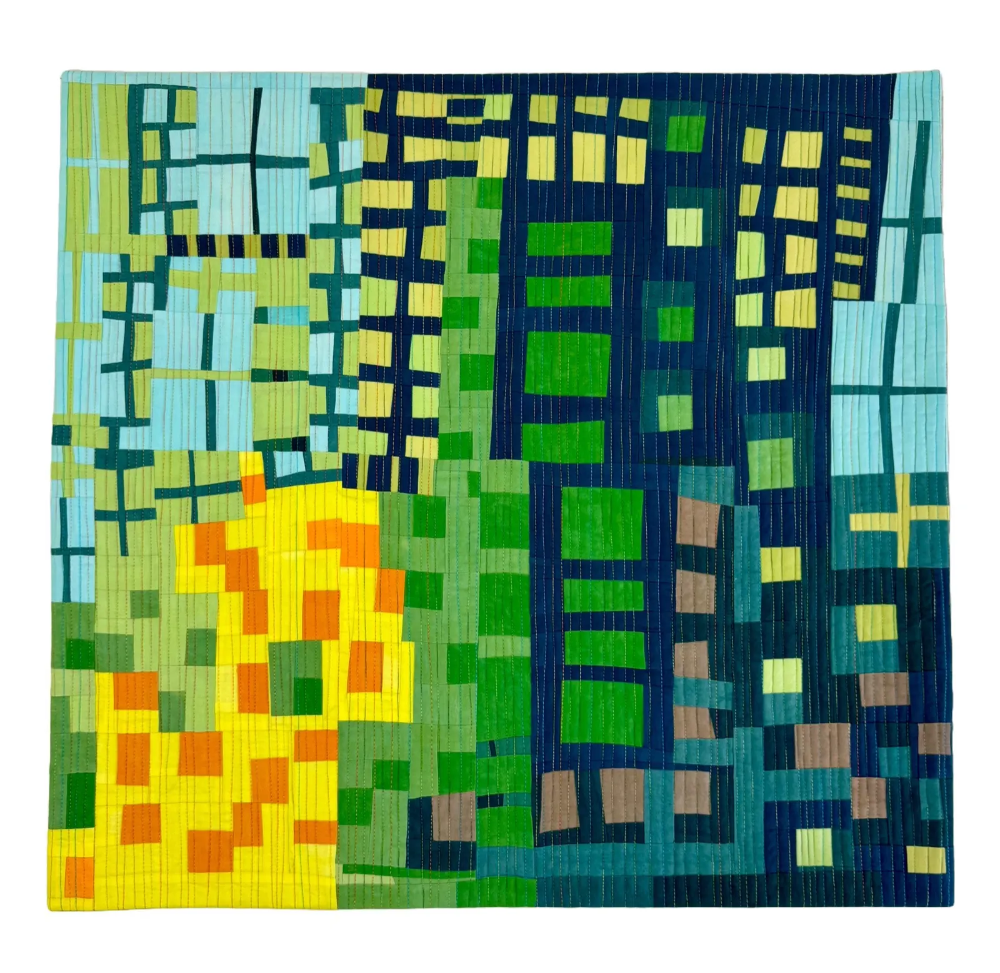
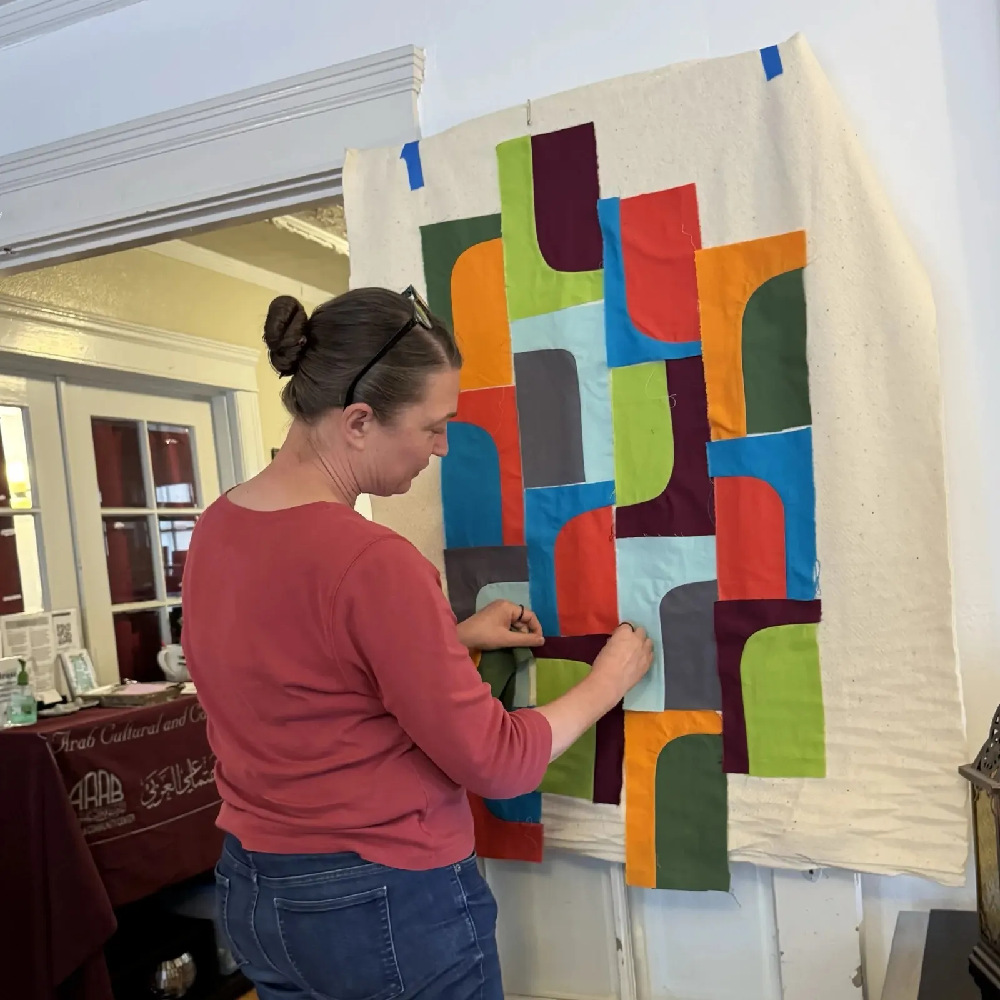
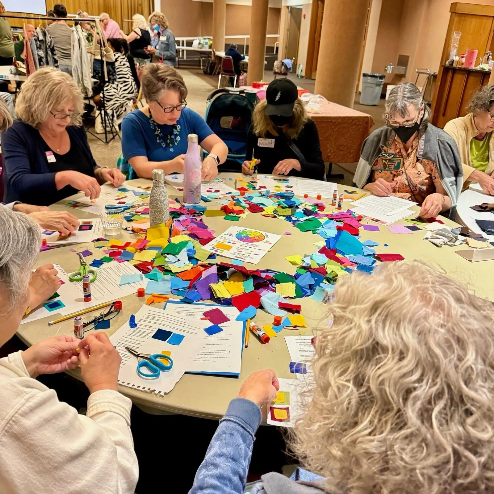

Quilt artist and educator in San Francisco, making contemporary art quilts with a modern aesthetic.

Leaf quilts on the wall, and on the jacketI offer workshops and lectures focused on modern and improvisational quilting techniques, giving students the tools and confidence to create expressive quilts that are unique to the maker.
Improvisation is at the heart of my creative process, allowing each quilt to evolve naturally as I work.

Postmodern Jukebox
Happy Pills
Candy Stripes
Humboldt IV
Intrados
Red, White and Blue Remix
Springtime in the CityMy quilts have been exhibited widely in local, national, and international exhibitions, earning numerous awards.
Postmodern Jukebox is also a workshop: one curved block, built without ruler or template, and a quilt of your own design.
“My work is inspired by the colors, textures, and rhythms I encounter in daily life.”
I am a San Francisco-based modern quilt maker who has been drawn to art since childhood. I studied photography in college and beyond, but art took a backseat for years while I built a career in a non-creative field and raised a family. In the mid-2000s, I discovered quilting and quickly became obsessed with the medium.

Curved blocks on the design wallOne block, infinite possibilities. Learn how to construct a curved block using my ruler and template free technique and design your own Postmodern Jukebox quilt. Perfect for those new to improv or anyone looking for a structured way to dive into freeform design!
“As a self-taught quilter, I was a bit nervous about joining organized classes, but let me tell you, this one was a total A+ experience!”
Takes the mystery out of improvisational quilting with a simple, stress-free approach: basic shapes and colors, and small variations on a theme.
How to use stripes in quilt design, from structured stripe sets to improvisational compositions. You leave with a unique, modern quilt top.
Transform images into an original abstract quilt design, then begin bringing that design to life in fabric.
What to do with the leftovers from finished projects, the WIPs that didn’t work out, and all the odds and ends in your scrap basket.
A strong foundation in machine quilting, and ways to enhance your quilt designs.
From a 45 to 60 minute non-sewing introduction to color interaction, to a full day of palette development and square-in-a-square blocks.

A workshop around the color wheelPricing as of May 2026, extra fee for additional students. I’m available in person or via Zoom; for in-person events, travel, lodging and meals are additional. Looking for something different? I’m happy to customize a class to suit your needs.
Book me for a highly entertaining and engaging lecture with a trunk show of my quilts.
Lecture fee for 2026, in person or via Zoom. For in-person events, travel, lodging and meals are additional.
A 1-hour lecture and trunk show: from a hobbyist without a clear personal style to a modern, improvisational quilter with a distinct voice.
What you really need to know about color to design stunning quilts.
What is abstraction, and how can it help us develop a unique visual language in our quilts?
Nov 52026, live online
Color lecture at Quilt Fusion. Registration is live.
If you are interested in booking me to teach a workshop or lecture, please reach out. Just write, and let’s chat!
csjshearer@gmail.com